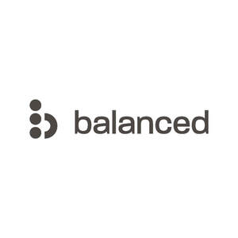

Trade Mark Journal No.2026/008 20 February 2026
UK00004305823 4 December 2025 (5,35)

- Class 5
- Nutritional supplements; Dietary and nutritional supplements; Mineral nutritional supplements; Liquid nutritional supplements; Dietary supplements; Dietary food supplements; Mineral dietary supplements; Dietary supplements consisting of vitamins; Liquid dietary supplements; Zinc dietary supplements; Food supplements; Probiotic supplements; Vitamin supplements; Anti-oxidant food supplements; Dietary supplements and dietetic preparations; Dietary supplements for humans; Anti-oxidant supplements; Dietary and nutritional preparations; Mineral dietary supplements for humans; Vitamin and mineral food supplements; Prebiotic supplements; Nutritional supplements consisting primarily of magnesium; Calcium supplements; Herbal supplements; Homeopathic supplements; Dietary supplements with a cosmetic effect; Nutritional supplements consisting primarily of zinc; Vitamin and mineral supplements; Health food supplements made principally of vitamins; Herbal dietary supplements for persons special dietary requirements; Dietary supplements promoting fitness and endurance; Dietary supplements in powder form; Folic acid dietary supplements; Liquid vitamin supplements; Nutritional supplements consisting primarily of iron; Vitamin preparations in the nature of food supplements; Health food supplements for persons with special dietary requirements; Dietary supplements and dietetic preparations containing CBD oil; Food supplements for sportsmen; Dietary supplements consisting primarily of calcium; Dietary supplements consisting primarily of magnesium; Health food supplements made principally of minerals; Food supplements for non-medical purposes; Dietary supplements for humans not for medical purposes; Dietary supplements for human beings; Fitness and endurance supplements; Dietary supplements consisting primarily of iron; Food supplements in liquid form; Food supplements consisting of amino acids; Anti-oxidants for dietary use.
- Class 35
- Retail services in relation to dietary supplements; Wholesale services in relation to dietary supplements.
CLF Distribution Ltd